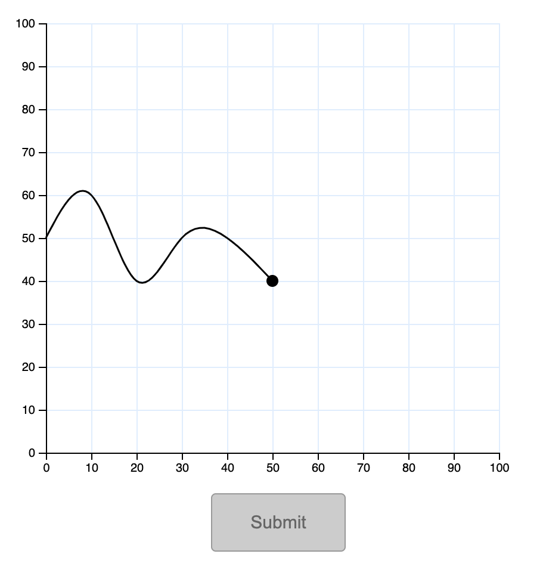
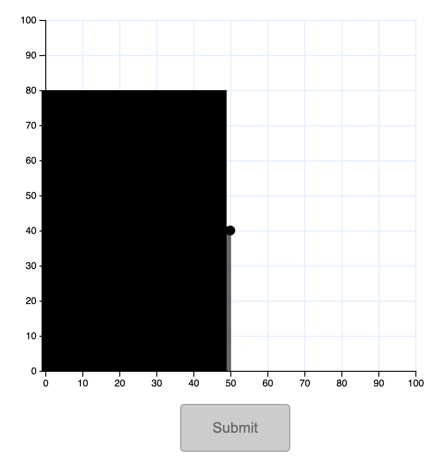

Study Instructions
Welcome!
Please carefull read the following instructions as your performance is dependent on understanding the task.
In this survey, you will be prompted to make predictions for trend plots. There will be a total of 12 plots for each participant.Here is an example of what a line plot might look like in our study: you will suggest your prediction by selecting 5 points on the right missing half. Click on the axis to add a point and input a total of 5 points to complete a single trial.

Note that for all of the trials the left half of the line plot will be displayed and quickly masked after a
certain
time limit,
but you will have unlimited time to make your prediction.

